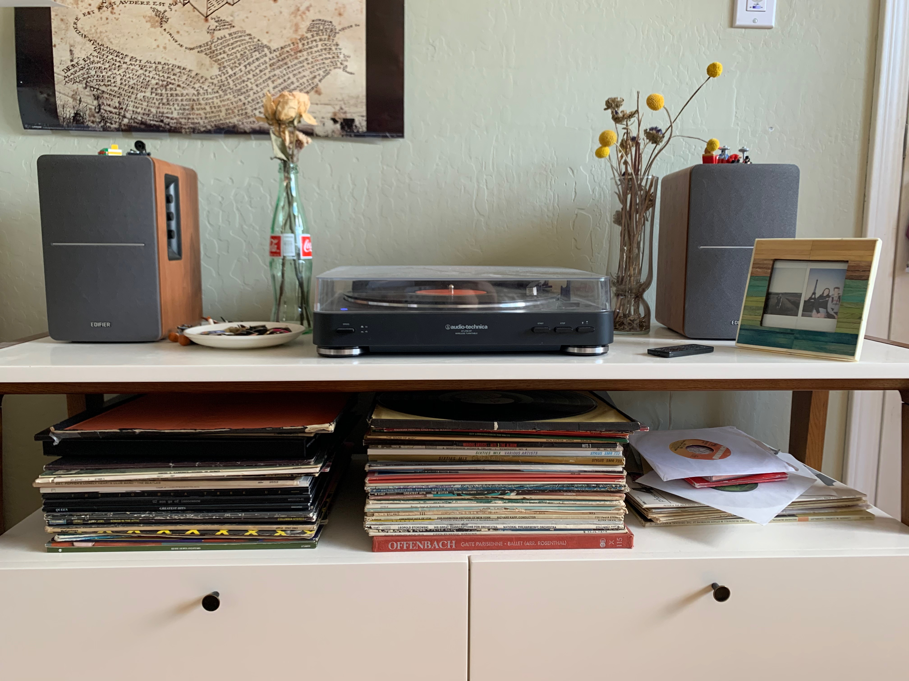
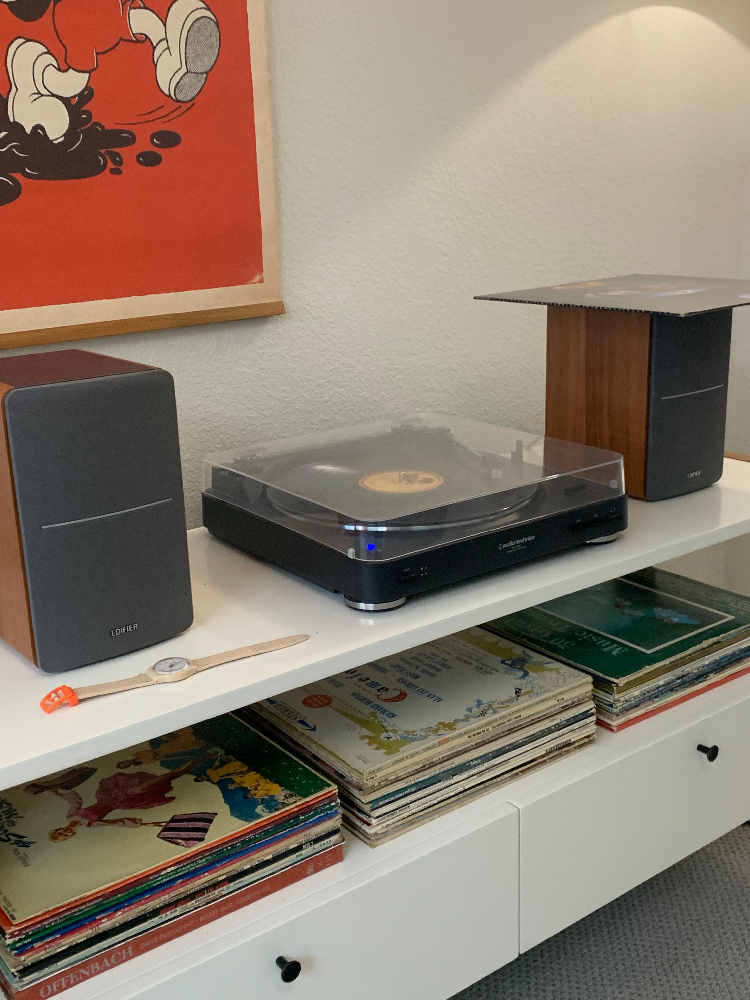
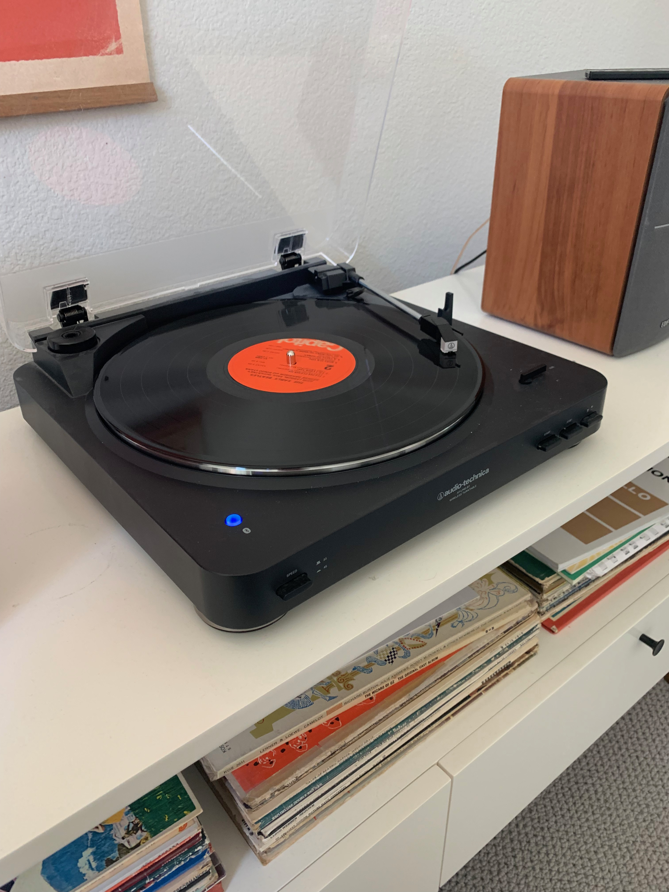
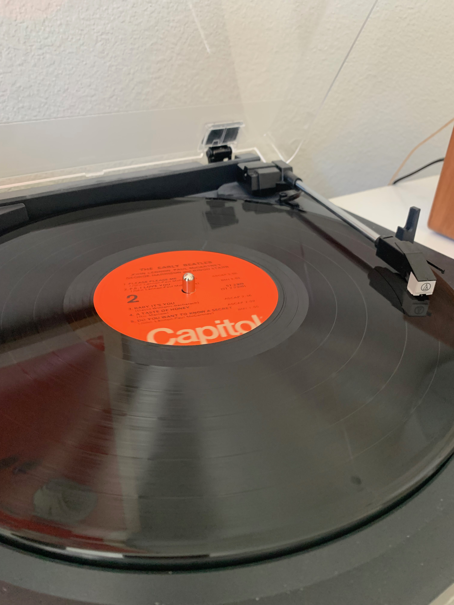
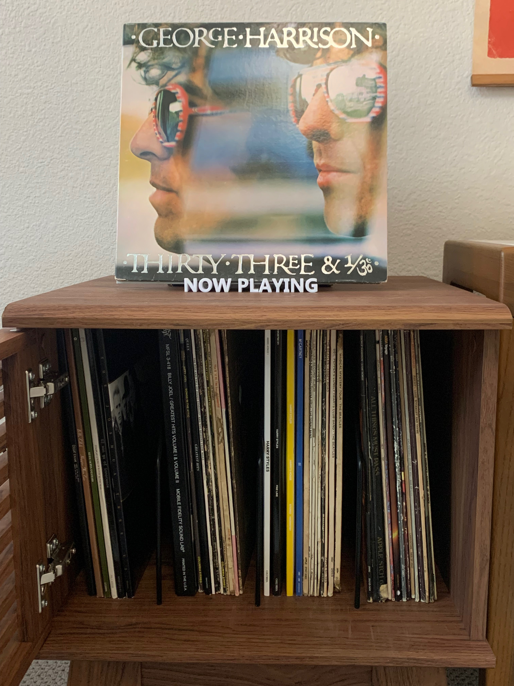
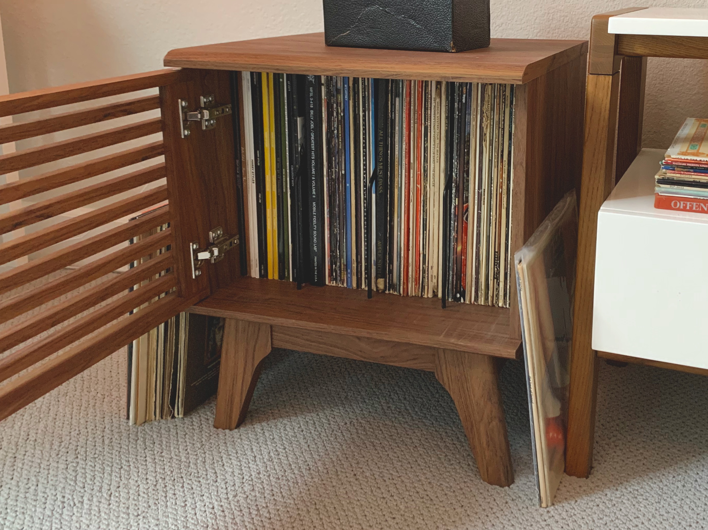
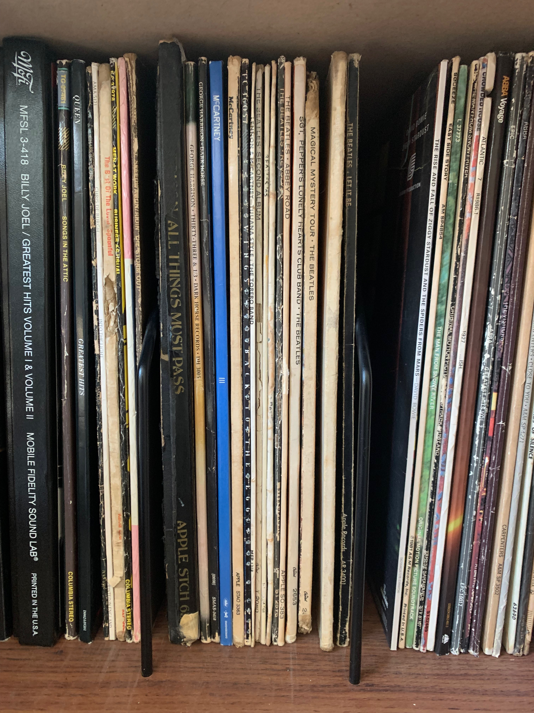
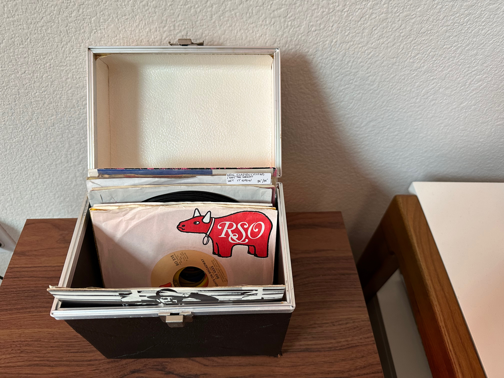
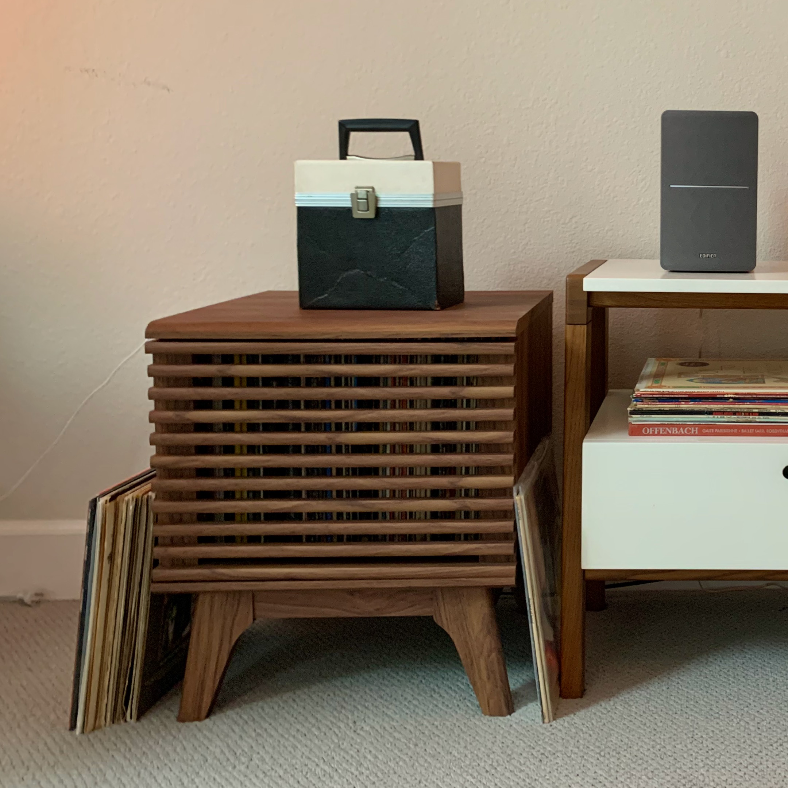
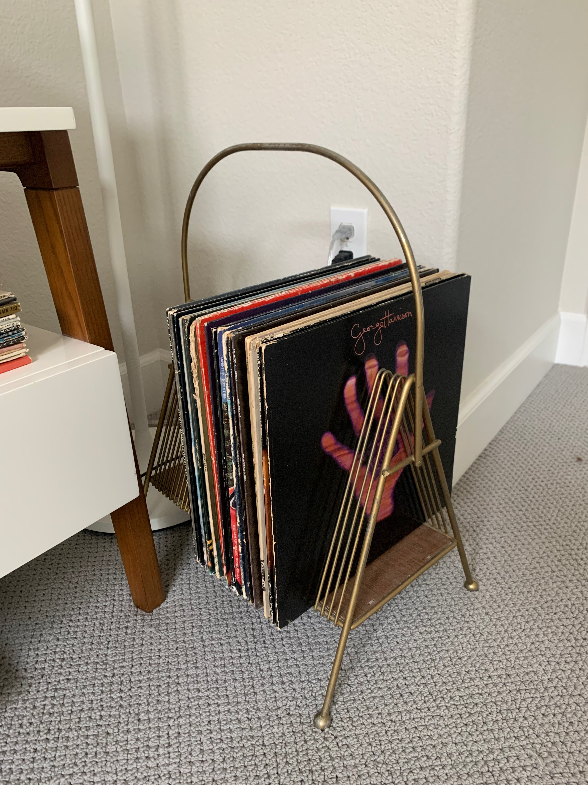

Setup

This is dummy text! What’s a museum? We think we know, but the museum experience has evolved dramatically over the last century, and especially over the last ten years, in large part due to how technological innovations have changed the ways that we consume and engage with information. This course will explore many different types of museum, from curated to crowd-sourced, from physical to virtual to mobile, from passive to active and even performative.



This is dummy text! What’s a museum? We think we know, but the museum experience has evolved dramatically over the last century, and especially over the last ten years, in large part due to how technological innovations have changed the ways that we consume and engage with information. This course will explore many different types of museum, from curated to crowd-sourced, from physical to virtual to mobile, from passive to active and even performative.



This is my little 45 box. I got it a bit more than a year ago at the Housing Works with Cat. I also happened to get about 7 carpenters 45s with it



This is dummy text! What’s a museum? We think we know, but the museum experience has evolved dramatically over the last century, and especially over the last ten years, in large part due to how technological innovations have changed the ways that we consume and engage with information. This course will explore many different types of museum, from curated to crowd-sourced, from physical to virtual to mobile, from passive to active and even performative. This course will explore many different types of museum, from curated to crowd-sourced, from physical to virtual to mobile, from passive to active and even performative.